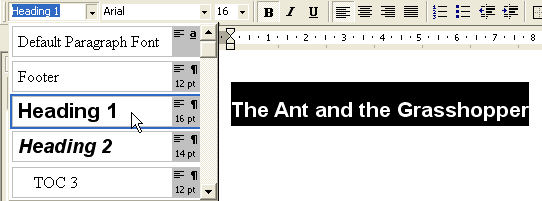
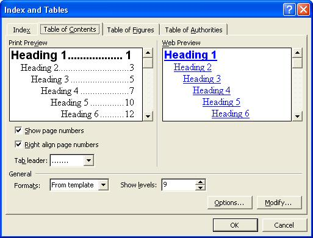
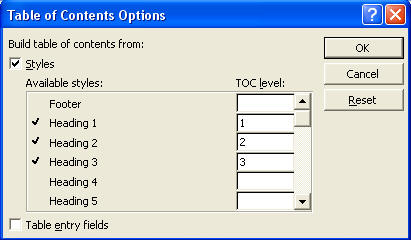
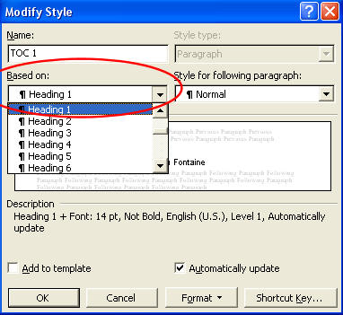
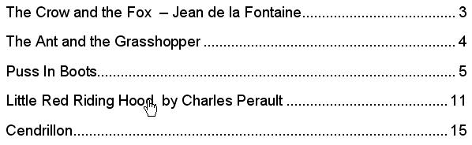

Free
computer Tutorials
|
Free
computer Tutorials
|
|
 home home |
|
||||
Microsoft Word Advanced - Create a Table of ContentsThe tables of contents page you created earlier was only a simple one. There is a better way to do it. Though it is more complex. We'll see how to do that now.
You can let Microsoft Word create your Table of Contents for you. Before we do that, make sure you go through your document and highlight any titles. In our Booklet, we had titles like "The Crow and the Fox", and "Puss in Boots". Highlight these one at a time. Then from the Style drop down box, select Heading 1, as in the image below:  This will turn all of your Titles into the Heading 1 Style. We can then tell Word to base our Table of Contents on the Heading 1 Style. If you have any sub headings in your long documents, turn these into Heading 2 or Heading 3 styles from the drop down box. You can then tell Word to add these sub headings to your Table of Contents page. But our booklet is only simple, so we only need the Heading 1 style. Once all your titles are formatted to your chosen Styles, do the following.
 In the dialogue box above, we've elected to Show page numbers, and to Right-align page numbers. We've also set the Tab leader to be dots. As we want to build our contents page on our chosen Styles (Heading 1), click the Options button at the bottom. The following box appears:  The Styles chosen have a tick next to them. To get rid of an option, simply click inside the textbox and delete the number. For our booklet, click inside the 3 textbox and delete this number. Do the same for number 2. You should then be left with a tick next to Heading 1. Click OK. We can modify the font used for the Tables of Contents. We'll make sure ours matches our Heading 1 style. So do this:
 The area we're interested in is circled in red, Based on.
 When you move your mouse over a title, it changes to a hand. This allows you to click on a story, and have Word jump to that section. Notice, too, that Word has inserted the page numbers and story titles for us. Much easier than typing, when you get the hang of it!
In the next part of these Word tutorials, we'll see how to create a logo. Learn How to Create a Logo in Microsoft Word --> |
|||||
|